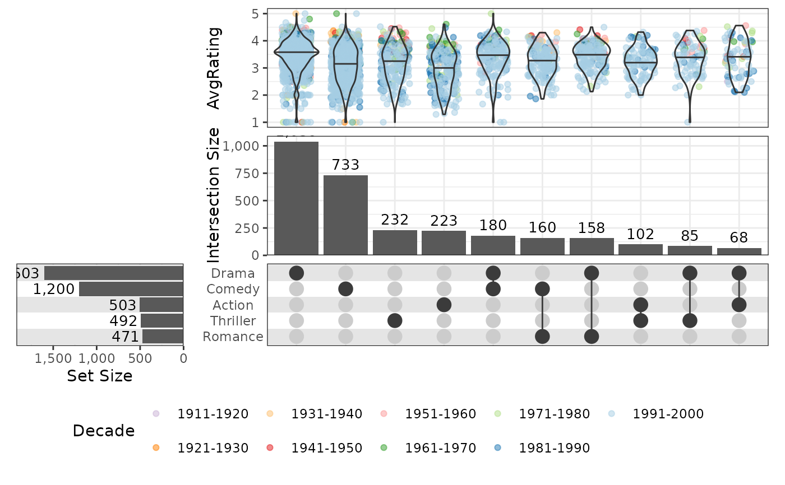
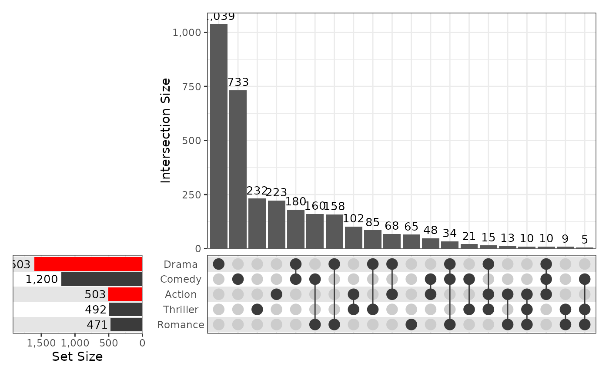

Make simple UpSet plots using ggplot2 and patchwork
simpleUpSet(
x,
sets = NULL,
sort_sets = size,
sort_intersect = list(desc(size), degree, set),
n_intersect = 20,
min_size = 0,
min_degree = 1,
max_degree = length(sets),
set_layers = default_set_layers(),
intersect_layers = default_intersect_layers(),
grid_layers = default_grid_layers(),
highlight = NULL,
highlight_levels = NULL,
annotations = list(),
width = 0.75,
height = 0.75,
vjust_ylab = 0.8,
stripe_colours = c("grey90", "white"),
guides = "keep",
top_left = NULL,
...,
na.rm = TRUE
)Input data frame
Character vector listing columns of x to plot
<data-masking> specification
for set order, using variables such as size, desc(size) or NULL. Passed
internally to dplyr::arrange(). The only possible options are size,
desc(size) or NULL (for sets in the order passed)
list of <data-masking>
specifications for intersection order. Passed internally to
dplyr::arrange(). The available columns are size, degree and set,
along with highlight if specified. Any other column names will cause an
error. The default order is in descending sizes, using degree and set to
break ties.
Maximum number of intersections to show
Only show intersections larger than this value
Only show intersections within this range
List of ggplot2 layers, scales and themes to define the
appearance of the sets panel. Can be obtained and extended using
default_set_layers()
List of ggplot2 layers, scales and themes to define
the appearance of the intersections panel. Can be obtained and extended
using default_intersect_layers()
List of ggplot2 layers, scales & themes
dplyr::case_when() statement defining all intersections to
highlight using geom_intersect and scale_fill/colour_intersect.
Will add a column named highlight which can be called from any geom passed
to the intersections barplot or matrix
Given the highlight column will be coerced to a factor when setting colours etc, levels can be manually set here for finer control.
list where each element is a list of ggplot2 layers. Each element will be added as an upper annotation panel above the intersections plot. All layer types (geom, scale, aes, stat, labs etc) can be passed with the exception of facets.
Proportional width and height of the intersection panel
Used to nudge the y-axis labels closer to the axis
Colours for background stripes in the lower two panels. For no stripes, set as NULL
Passed to patchwork::plot_layout()
Optional ggplot object to show in the top left panel. Will default to an empty ggplot object
Not used
NA handling
Object of class 'patchwork' containing multiple ggplot panels
Taking a subset of columns from a data.frame, create an UpSet plot showing all intersections as specified. Columns chosen for the sets and intersections must contain logical values or be strictly 0/1 values.
Internally, data objects will have the variables set and intersect which
can be referred to when passing custom aes() mappings to various layers.
If specifying highlights, the column highlight will also be added as a
column to the data.frame containing intersections data, following the
case_when output provided as the argument.
Scales can be passed to the intersections and grid panels, taking this
structure into account.
Any additional layers passed using annotations() will have layers added
after an initial, internal call to ggplot(data, aes(x = intersect)).
Additional columns can be used where appropriate for creating boxplots etc.
A list of ggplot2 layers, scales, guides and themes is expected in each of
the set_layers, intersect_layers or grid_layers arguments, with
defaults generated by calls to default_set_layers(),
default_intersect_layers() or default_grid_layers().
These can be used as templates to full customisation by creating a custom
list object, or modified directly using the ellipsis
## Use a modified version of the movies data provided with the package UpSetR
library(tidyverse)
#> ── Attaching core tidyverse packages ──────────────────────── tidyverse 2.0.0 ──
#> ✔ dplyr 1.1.4 ✔ readr 2.1.5
#> ✔ forcats 1.0.1 ✔ stringr 1.5.2
#> ✔ lubridate 1.9.4 ✔ tibble 3.3.0
#> ✔ purrr 1.1.0 ✔ tidyr 1.3.1
#> ── Conflicts ────────────────────────────────────────── tidyverse_conflicts() ──
#> ✖ dplyr::filter() masks stats::filter()
#> ✖ dplyr::lag() masks stats::lag()
#> ℹ Use the conflicted package (<http://conflicted.r-lib.org/>) to force all conflicts to become errors
theme_set(theme_bw())
sets <- c("Action", "Comedy", "Drama", "Thriller", "Romance")
movies <- system.file("extdata", "movies.tsv.gz", package = "SimpleUpset") %>%
read_tsv() %>%
mutate(
Decade = fct_inorder(Decade) %>% fct_rev()
)
#> Rows: 3883 Columns: 10
#> ── Column specification ────────────────────────────────────────────────────────
#> Delimiter: "\t"
#> chr (2): Name, Decade
#> dbl (8): ReleaseDate, Action, Comedy, Drama, Thriller, Romance, AvgRating, W...
#>
#> ℹ Use `spec()` to retrieve the full column specification for this data.
#> ℹ Specify the column types or set `show_col_types = FALSE` to quiet this message.
simpleUpSet(movies, sets)
## Add a detailed upper plot
simpleUpSet(
movies, sets, n_intersect = 10,
annotations = list(
list(
aes(y = AvgRating),
geom_jitter(aes(colour = Decade), height = 0, width = 0.3, alpha = 0.5),
geom_violin(fill = NA, quantiles = 0.5, quantile.linetype = 1),
scale_colour_brewer(palette = "Paired"),
guides(colour = guide_legend(nrow = 2, reverse = TRUE))
)
), guides = "collect"
) &
theme(legend.position = "bottom")

## Modify set colours
set_cols <- c(
Action = "red", Comedy = "grey23", Drama = "red",
Romance = "grey23", Thriller = "grey23"
)
simpleUpSet(
movies, sets,
set_layers = default_set_layers(
fill = "set", scale_fill_manual(values = set_cols), guides(fill = guide_none())
)
)
